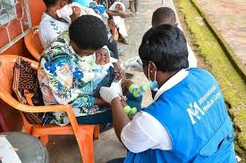
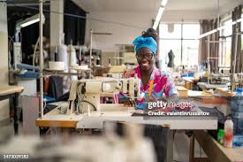
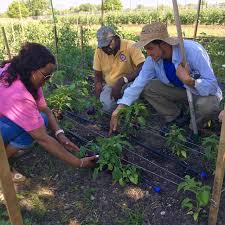

Children In Education
Provide quality education to over 10,000 children in underserved communities through schools, learning materials, and teacher training.
Hope, dignity, and opportunity for every child
Shepherds Hands Foundation was born out of a simple yet powerful truth: every child matters. Every child deserves love, dignity, and the chance to dream without limits. In too many communities, children wake up facing hunger, neglect, and the harsh weight of poverty. We are committed to meeting those urgent needs with practical compassion and long-term support.
About Shepherds Hands Foundation
We were born out of a simple yet powerful truth: every child matters. In too many corners of Cameroon and beyond, children wake up each day facing hunger, neglect, and the harsh weight of poverty. We work to bring real support, protection, and opportunity to those communities.
Our work brings together humanitarian assistance, sustainable development, education, healthcare, and economic empowerment so communities can thrive with dignity. Join us in our mission to create a better world for all.
Our reach
Provide quality education to over 10,000 children in underserved communities through schools, learning materials, and teacher training.
Establish 50 mobile clinics in remote areas to deliver basic healthcare services, vaccinations, and health education.
Expand operations to 20 additional countries by 2030, focusing on regions most affected by poverty, conflict, and climate change.
Provide access to clean drinking water for 200 communities through wells and purification systems.
Why we serve
Shepherds Hands Foundation is committed to providing humanitarian assistance, promoting sustainable development, and empowering vulnerable communities through education, healthcare, and economic opportunities.
We envision a world where every community has the resources and support needed to thrive, where no one is left behind, and where compassion and cooperation are the driving forces behind global development.
Partner with us
Make a single donation to support our ongoing projects and emergency response efforts.
Express interestBecome a monthly donor and provide sustained support for our long-term programs.
Become a sponsorIs your organization interested in partnering with us? Let's create change together.
Meet the teamJoin our team of dedicated volunteers and contribute your time and skills to our cause.
Give resourcesCore program areas
Schools, materials, and scholarships
Focused on helping children access quality education through school development, learning materials, teacher support, and scholarship programs.
Mobile clinics and community wellness
Supports access to basic healthcare services, vaccinations, and health education in remote and underserved areas.
Training, microloans, and opportunity
Advances entrepreneurial training, small business start-up loans, women empowerment, and sustainable agriculture support.
Our impact and future

Our goal is to establish 50 mobile clinics in remote areas to provide basic healthcare services, vaccinations, and health education to over 100,000 people.

We aim to expand our operations to 20 additional countries by 2030, focusing on regions most affected by poverty, conflict, and climate change.

Our ambition is to train 50,000 farmers in sustainable agricultural practices, helping communities achieve food security while protecting the environment.